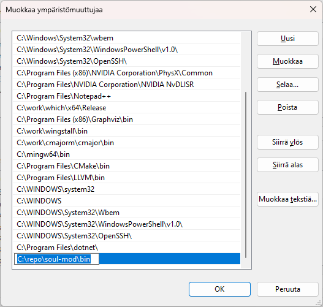

Installation from the GitHub repository
- Copy the link to the soul-mod repository.

- Clone the repository.
- Create a SOUL_ROOT environment variable and set it to point to the soul-mod directory
- Open the soul-mod\config\build.props file with a text editor.
- Change the value of the BOOST_INCLUDE_DIR and BOOST_LIB_DIR macros within the PropertyGroup Label="UserMacros" element
to contain the paths to your Boost include directory and Boost library directory.

- Start the Visual Studio 2022 x64 Native Tools Command Prompt
- Change to the soul-mod/nmake directory and run the nmake command:
- If NMAKE succeeds, the Makefile prints 'make succeeeded.'
- Add the soul-mod\bin directory to your PATH environment variable.

- Restart the command prompt, so that the changed PATH takes effect.
- Change to the soul-mod\examples\minilang directory.
- Run build.bat.
- The bat runs slg and spg with the minilang project files.
- If the programs run and print:
'lexers for project 'minilang.slg' generated successfully.' and
'parsers for project 'minilang.spg' generated successfully.' everything works fine.